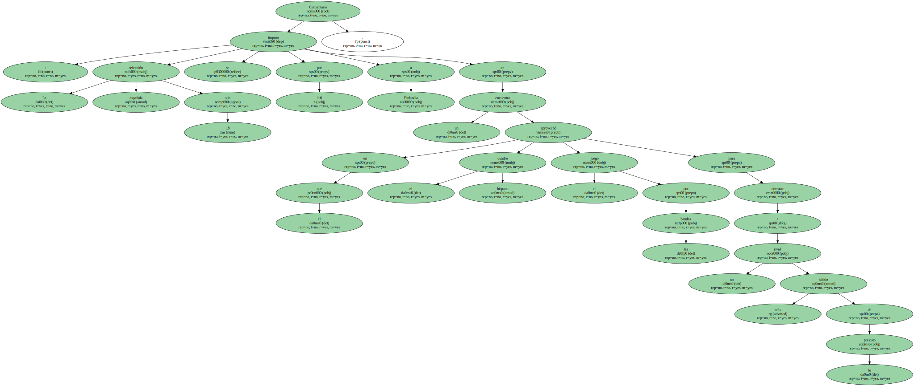
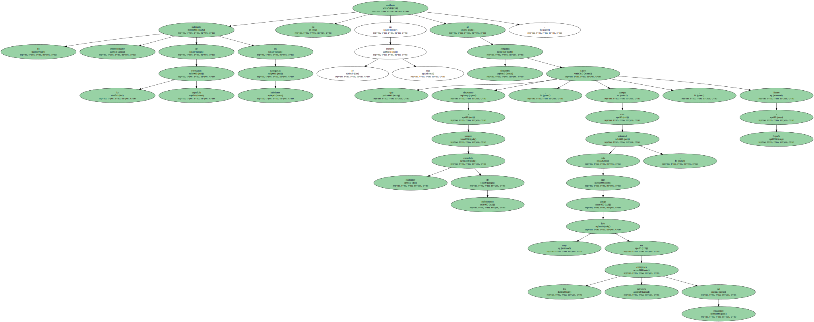
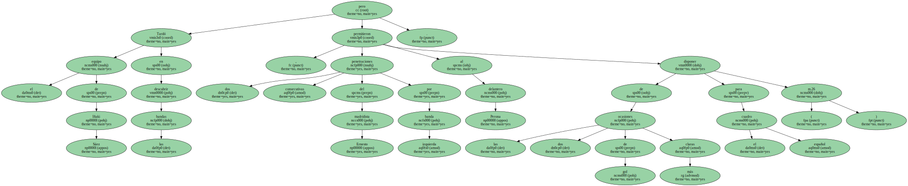
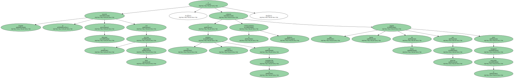
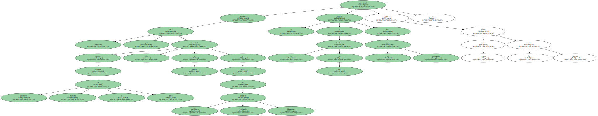
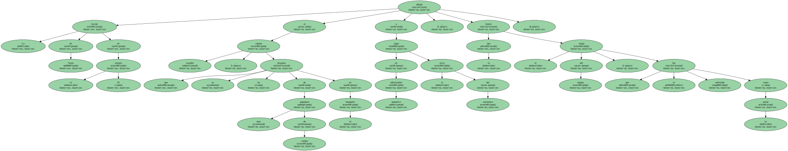

Comentario : La selección española sub 18 se impuso por 1-0 a Finlandia en un encuentro en el que el cuadro hispano aprovechó el juego por las bandas para derrotar a un rival más sólido de lo previsto.
El impresionante palmarés de la selección española en categorías inferiores no amilanó en lo más mínimo al conjunto finlandés que salió dispuesto a romper cualquier complejo de inferioridad , aunque con más voluntad que juego , frente a España , muy frío en los primeros compases del encuentro.
La selección , que notó la ausencia en el centro del campo del barcelonista Arteta , baja por lesión , y del valencianista Parri , que ayer jugó con su equipo en la Liga de Campeones , se obcecó en atacar por el centro , lo que facilitó el trabajo a la defensa nórdica comandada por el interista Sinisola.

Tardó el equipo de Iñaki Sáez en descubrir las bandas , pero dos penetraciones consecutivas del madridista Ernesto por banda izquierda permitieron al delantero Perona disponer de las dos ocasiones de gol más claras para el cuadro español ( m.26 ).
España se marchó al descanso con la lección bien aprendida , y a los cuatro minutos de la reanudación el centrocampista Roberto culminó una buena jugada de Elías por banda derecha para inaugurar el marcador.
Finlandia , que durante los primeros cuarenta y cinco minutos sólo había inquietado a España a través del rapidísimo interior izquierdo Oravainen aprovechó la apatía de los hombres de Saez tras el gol conseguido para poner en apuros la meta hispana.
La lesión de Nano en el minuto 65 obligó al equipo español , que ya no disponía de más jugadores de campo en el banquillo a jugar en inferioridad numérica el resto del encuentro , lo que limitó el juego del equipo , que se fue enfriando como la noche.
